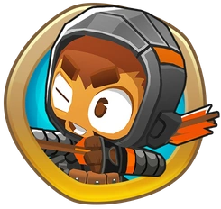
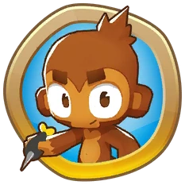
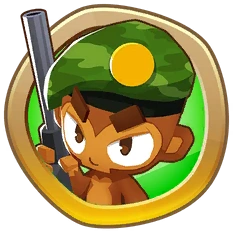
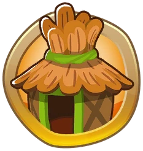

Towers
In Bloons TD 6, you command different towers, be it monkey or machine, to dispose of the pesky Bloons. These include the various Heroes and towers that fall under 1 of 4 different classes: Primary, Military, Magic, and Support. Each tower preforms different actions and can be upgraded to suit different needs.
Heroes
Heroes are a unique type of tower that upgrade themselves over time. Only one hero of choice can be used in a game, but Heroes are more powerful and do not require money to be upgraded. The Heroes each have their own purpose, ranging from popping Bloons with great power, providing income, buffing other towers, or a combination of them. There are currently 14 Heroes in the game, including Quincy the Archer, Gwendolin the Pyromaniac, Striker Jones the Artillery Commander, Obyn Greenfoot the Forest Guardian, Captain Churchill the Tank, Benjamin the Code Monkey, Ezili the Voodoo Monkey, Pat Fusty the Giant Monkey, Adora the High Priestess, Admiral Brickell the Naval Commander, Etienne the Drone Operator, Sauda the Swordmaster, Psi the Psionic Monkey, and Geraldo the Mystic Shopkeeper.
Primary Towers
Primary Towers are the core towers of the game, many of which had their first apperance all the way back in the first Bloons Tower Defense game. These towers include the Dart Monkey, a dart throwing monkey that excels with it's consistent reliability, the Boomerang Monkey, that throws returning boomerangs down the path, the Bomb Shooter, which launches explosive bombs capable of popping Lead Bloons, the Tack Shooter, a machine that launches tacks in several directions, the Ice Monkey, that freezes Bloons in their tracks, and the Glue Gunner, which launches sticky glue to slow down the Bloons.
Military Towers
Military Towers are towers wielding heavy military equipment, including launching explosive mortars or piloting helicopters and airplanes. These towers include the Sniper Monkey, which can hit Bloons from anywhere on the track using its high grade rifle, the Monkey Sub, a submarine that launches homing torp-e-darts, the Monkey Bucaneer, a pirate ship that launches heavy darts, the Monkey Ace, a flying airplane that strafes and launches volleys of darts, the Heli Pilot, a monkey helicopter pilot with twin machine guns, the Mortar Monkey, which launches fiery and explosive mortars on the track, and the Dartling Gunner, who wields a power dart shooting machine gun.
Magic Towers
Magic Towers are monkeys wielding advanced magic techniques, such as advanced spells, alchemy, or superpowers! These towers include the Wizard Monkey, an arcane monkey that can be upgraded with various spells, the Super Monkey, a monkey superhero with a supersonic attack speed, the Ninja Monkey, which can use various ninja techniques to sabatoge or obliterate Bloons, the Alchemist, who can use various potions to melt Bloons with ease or buff other towers, and the Druid, who wields the powers of nature to ward off Bloons.
Support Towers
Support Towers are towers that specialize in assisting other towers or providing various helpful effects. These towers include the Banana Farm, a farm that provides income for the player, the Spike Factory, which lays piles of spikes on the track to pop Bloons, the Monkey Village, which buffs other towers in its radius, the Engineer Monkey, a nail gun wielding specialist with various inventions, and the newly added Beast Handler, who commands beasts of land, sea, and air to destroy Bloons.